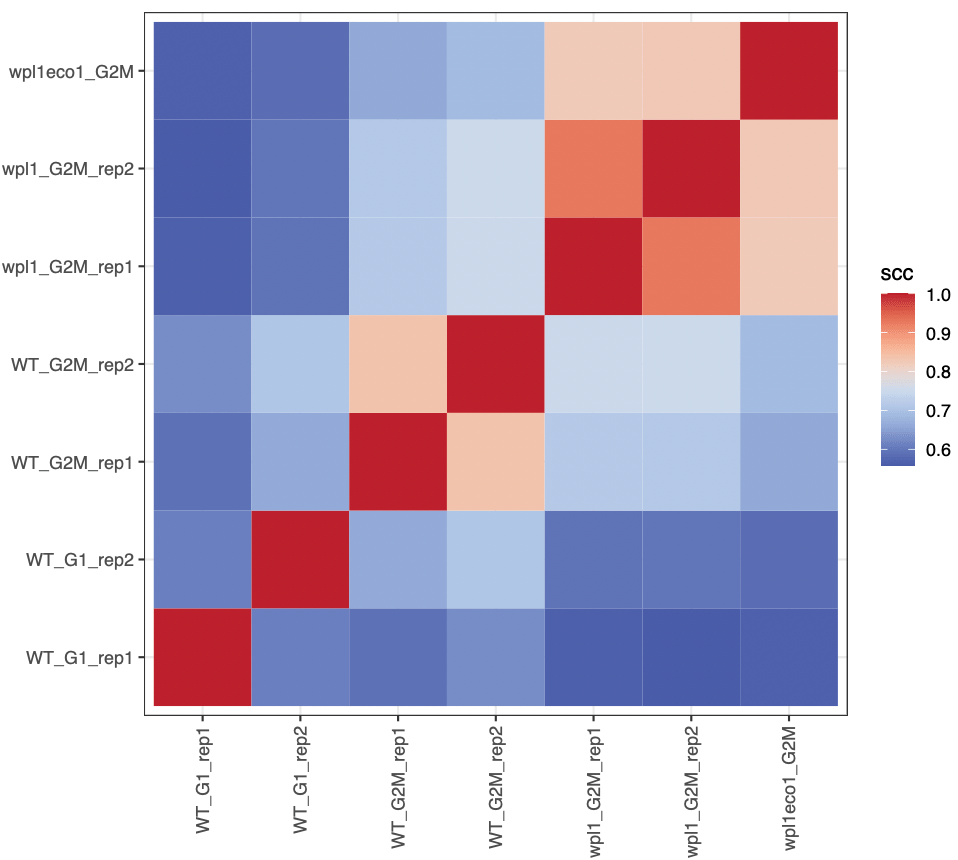

# !! This code is not actually executed !!
dir.create('data')
download.file("ftp://ftp.sra.ebi.ac.uk/vol1/fastq/SRR876/004/SRR8769554/SRR8769554_1.fastq.gz", "data/WT_G1_WT_rep1_R1.fastq.gz")
download.file("ftp://ftp.sra.ebi.ac.uk/vol1/fastq/SRR876/004/SRR8769554/SRR8769554_2.fastq.gz", "data/WT_G1_WT_rep1_R2.fastq.gz")
download.file("ftp://ftp.sra.ebi.ac.uk/vol1/fastq/SRR106/076/SRR10687276/SRR10687276_1.fastq.gz", "data/WT_G1_WT_rep2_R1.fastq.gz")
download.file("ftp://ftp.sra.ebi.ac.uk/vol1/fastq/SRR106/076/SRR10687276/SRR10687276_2.fastq.gz", "data/WT_G1_WT_rep2_R2.fastq.gz")
download.file("ftp://ftp.sra.ebi.ac.uk/vol1/fastq/SRR876/009/SRR8769549/SRR8769549_1.fastq.gz", "data/WT_G2M_WT_rep1_R1.fastq.gz")
download.file("ftp://ftp.sra.ebi.ac.uk/vol1/fastq/SRR876/009/SRR8769549/SRR8769549_2.fastq.gz", "data/WT_G2M_WT_rep1_R2.fastq.gz")
download.file("ftp://ftp.sra.ebi.ac.uk/vol1/fastq/SRR106/081/SRR10687281/SRR10687281_1.fastq.gz", "data/WT_G2M_WT_rep2_R1.fastq.gz")
download.file("ftp://ftp.sra.ebi.ac.uk/vol1/fastq/SRR106/081/SRR10687281/SRR10687281_2.fastq.gz", "data/WT_G2M_WT_rep2_R2.fastq.gz")
download.file("ftp://ftp.sra.ebi.ac.uk/vol1/fastq/SRR876/001/SRR8769551/SRR8769551_1.fastq.gz", "data/wpl1_G2M_rep1_R1.fastq.gz")
download.file("ftp://ftp.sra.ebi.ac.uk/vol1/fastq/SRR876/001/SRR8769551/SRR8769551_2.fastq.gz", "data/wpl1_G2M_rep1_R2.fastq.gz")
download.file("ftp://ftp.sra.ebi.ac.uk/vol1/fastq/SRR106/078/SRR10687278/SRR10687278_1.fastq.gz", "data/wpl1_G2M_rep2_R1.fastq.gz")
download.file("ftp://ftp.sra.ebi.ac.uk/vol1/fastq/SRR106/078/SRR10687278/SRR10687278_2.fastq.gz", "data/wpl1_G2M_rep2_R2.fastq.gz")
download.file("ftp://ftp.sra.ebi.ac.uk/vol1/fastq/SRR876/005/SRR8769555/SRR8769555_1.fastq.gz", "data/wpl1eco1_G2M_R1.fastq.gz")
download.file("ftp://ftp.sra.ebi.ac.uk/vol1/fastq/SRR876/005/SRR8769555/SRR8769555_2.fastq.gz", "data/wpl1eco1_G2M_R2.fastq.gz")Workflow 1: Distance-dependent interactions across yeast mutants
Aims
This chapter illustrates how to:
- Compute P(s) of several samples and compare them
- Compute distance-adjusted correlation between Hi-C datasets with
HiCRep - Perform differential interaction analysis between Hi-C datasets with
multiHiCcompare
Datasets
We leverage seven yeast datasets in this notebook. They are all available from SRA:
-
SRR8769554: WT yeast strain, G1 phase (rep1) -
SRR10687276: WT yeast strain, G1 phase (rep12) -
SRR8769549: WT yeast strain, G2/M phase (rep1) -
SRR10687281: WT yeast strain, G2/M phase (rep12) -
SRR8769551: wpl1 mutant yeast strain, G2/M phase (rep1) -
SRR10687278: wpl1 mutant yeast strain, G2/M phase (rep2) -
SRR8769555: wpl1/eco1 mutant yeast strain, G2/M phase
Recovering data from SRA
The easiest for this is to directly fetch files from SRA from their FTP server. We can do so using the base download.file function.
Note
The next two code chunks illustrate how to do download and process Hi-C reads from SRA, but they are not actually executed when rendering this website as it would take a significant amount of time.
Processing reads with HiCool
We will map each pair of fastqs on the yeast genome reference (R64-1-1) using HiCool.
# !! This code is not actually executed !!
library(HiCool)
samples <- c(
'WT_G1_rep1',
'WT_G1_rep2',
'WT_G2M_rep1',
'WT_G2M_rep2',
'wpl1_G2M_rep1',
'wpl1_G2M_rep2',
'wpl1eco1_G2M'
)
purrr::map(samples, ~ HiCool(
r1 = paste0('data/', .x, '_R1.fastq.gz'),
r2 = paste0('data/', .x, '_R2.fastq.gz'),
genome = 'R64-1-1',
restriction = 'DpnII',
iterative = FALSE,
threads = 15,
output = 'data/HiCool/',
scratch = '/data/scratch/'
))Processed samples are put in data/HiCool directory. CoolFile objects are pointers to individual contact matrices. We can create such objects by using the importHiCoolFolder utility function.
cfs <- list(
WT_G1_rep1 = importHiCoolFolder('data/HiCool', 'GK8ISZ'),
WT_G1_rep2 = importHiCoolFolder('data/HiCool', 'SWZTO0'),
WT_G2M_rep1 = importHiCoolFolder('data/HiCool', '3KHHUE'),
WT_G2M_rep2 = importHiCoolFolder('data/HiCool', 'UVNG7M'),
wpl1_G2M_rep1 = importHiCoolFolder('data/HiCool', 'Q4KX6Z'),
wpl1_G2M_rep2 = importHiCoolFolder('data/HiCool', '3N0L25'),
wpl1eco1_G2M = importHiCoolFolder('data/HiCool', 'LHMXWE')
)
cfsNow that these pointers have been defined, Hi-C contact matrices can be seamlessly imported in R with import.
library(purrr)
library(HiCExperiment)
hics <- map(cfs, import)
hics
## $WT_G1_rep1
## `HiCExperiment` object with 5,454,145 contacts over 12,079 regions
## -------
## fileName: "../OHCA-data/HiCool/matrices/W303_G1_WT_rep1^mapped-S288c^GK8ISZ.mcool"
## focus: "whole genome"
## resolutions(5): 1000 2000 4000 8000 16000
## active resolution: 1000
## interactions: 3347524
## scores(2): count balanced
## topologicalFeatures: compartments(0) borders(0) loops(0) viewpoints(0)
## pairsFile: ../OHCA-data/HiCool/pairs/W303_G1_WT_rep1^mapped-S288c^GK8ISZ.pairs
## metadata(3): log args stats
##
## $WT_G1_rep2
## `HiCExperiment` object with 12,068,214 contacts over 12,079 regions
## -------
## fileName: "../OHCA-data/HiCool/matrices/W303_G1_WT_rep2^mapped-S288c^SWZTO0.mcool"
## focus: "whole genome"
## resolutions(5): 1000 2000 4000 8000 16000
## active resolution: 1000
## interactions: 6756099
## scores(2): count balanced
## topologicalFeatures: compartments(0) borders(0) loops(0) viewpoints(0)
## pairsFile: ../OHCA-data/HiCool/pairs/W303_G1_WT_rep2^mapped-S288c^SWZTO0.pairs
## metadata(3): log args stats
##
## ... Plotting chromosome-wide matrices of merged replicates
We can merge replicates with the merge function, and map the plotMatrix function over the resulting list of HiCExperiments.
library(HiContacts)
chr <- 'X'
merged_replicates <- list(
WT_G1 = merge(hics[[1]][chr], hics[[2]][chr]),
WT_G2M = merge(hics[[3]][chr], hics[[4]][chr]),
wpl1_G2M = merge(hics[[5]][chr], hics[[6]][chr]),
wpl1eco1_G2M = hics[[7]][chr]
)
library(dplyr)
library(ggplot2)
maps <- imap(merged_replicates, ~ plotMatrix(
.x, use.scores = 'balanced', limits = c(-3.5, -1.5), caption = FALSE
) + ggtitle(.y))
cowplot::plot_grid(plotlist = maps, nrow = 1)
We can already note that long-range contacts seem to increase in frequency, in G2/M vs G1, in wpl1 vs WT and in wpl1/eco1 vs wpl1.
Compute P(s) per replicate and plot it
Still using the map function, we can compute average P(s) for each replicate.
Computation of the P(s) will take some time, as millions of pairs have to be imported in memory, but it will be accurate at the base resolution, rather than bin resolution from matrices.
Note
Since matrices were imported after HiCool processing with the importHiCoolFolder, the associated .pairs file has been automatically added to each HiCExperiment object!
The computed P(s) is stored for each sample as a tibble.
pairsFile(hics[[1]])
ps <- imap(hics, ~ distanceLaw(.x) |> mutate(sample = .y))
## Importing pairs file ../OHCA-data/HiCool/pairs/W303_G1_WT_rep1^mapped-S288c^GK8ISZ.pairs in memory. This may take a while...
## |===============================================================| 100% 318 MB
## Importing pairs file ../OHCA-data/HiCool/pairs/W303_G1_WT_rep2^mapped-S288c^SWZTO0.pairs in memory. This may take a while...
## |===============================================================| 100% 674 MB
## Importing pairs file ../OHCA-data/HiCool/pairs/W303_G2M_WT_rep1^mapped-S288c^3KHHUE.pairs in memory. This may take a while...
## |===============================================================| 100% 709 MB
## Importing pairs file ../OHCA-data/HiCool/pairs/W303_G2M_WT_rep2^mapped-S288c^UVNG7M.pairs in memory. This may take a while...
## |==============================================================| 100% 1683 MB
## Importing pairs file ../OHCA-data/HiCool/pairs/W303_G2M_wpl1_rep1^mapped-S288c^Q4KX6Z.pairs in memory. This may take a while...
## |==============================================================| 100% 1269 MB
## Importing pairs file ../OHCA-data/HiCool/pairs/W303_G2M_wpl1_rep2^mapped-S288c^3N0L25.pairs in memory. This may take a while...
## |==============================================================| 100% 1529 MB
## Importing pairs file ../OHCA-data/HiCool/pairs/W303_G2M_wpl1-eco1^mapped-S288c^LHMXWE.pairs in memory. This may take a while...
## |==============================================================| 100% 1036 MB
ps[[1]]
## # A tibble: 133 x 6
## binned_distance p norm_p norm_p_unity slope sample
## <dbl> <dbl> <dbl> <dbl> <dbl> <chr>
## 1 1 0.000154 0.000154 249. 0 WT_G1_rep1
## 2 2 0.0000563 0.0000563 91.2 0.702 WT_G1_rep1
## 3 3 0.0000417 0.0000417 67.5 0.699 WT_G1_rep1
## 4 4 0.00000835 0.00000835 13.5 0.696 WT_G1_rep1
## 5 5 0.00000501 0.00000501 8.10 0.693 WT_G1_rep1
## 6 6 0.00000250 0.00000250 4.05 0.690 WT_G1_rep1
## # ... with 127 more rowsWe can bind all tibbles together and plot P(s) and their slope for each sample.
df <- list_rbind(ps)
plotPs(
df, aes(x = binned_distance, y = norm_p,
group = sample, color = sample)
)
plotPsSlope(
df, aes(x = binned_distance, y = slope,
group = sample, color = sample)
)Correlation between replicates with hicrep
hicrep is a popular package to compute stratum-adjusted correlations between Hi-C datasets. “Stratum” refers to the distance from the main diagonal: with increase distance from the main diagonal, interactions of the DNA polymer are bound to decrease. hicrep computes a “per-stratum” correlation score and computes a weighted average correlation for entire chromosomes.
We can check the documentation for hicrep main function, get.scc. This tells us that mat1 and mat2 n*n intrachromosomal contact maps of raw counts should be provided. Fortunately, HiCExperiment objects can easily be coerced into actual dense matrices using as.matrix() function.
Important
Make sure to use the count scores, which are required by hicrep.
We can calculate the overall stratum-corrected correlation score over the chromosome IV between the two G2M WT replicates.
This can be generalized to all pairwise combinations of Hi-C datasets.
library(purrr)
library(dplyr)
library(ggplot2)
mats <- map(hics, ~ .x["IV"] |> as.matrix(use.scores = 'count'))
df <- map(1:7, function(i) {
map(1:7, function(j) {
data.frame(
i = names(hics)[i],
j = names(hics)[j],
scc = hicrep::get.scc(mats[[i]], mats[[j]], resol = 1000, h = 2, lbr = 5000, ubr = 200000)$scc
) |>
mutate(i = factor(i, names(cfs))) |>
mutate(j = factor(j, names(cfs)))
}) |> list_rbind()
}) |> list_rbind()
ggplot(df, aes(x = i, y = j, fill = scc)) +
geom_tile() +
scale_x_discrete(guide = guide_axis(angle = 90)) +
theme_bw() +
coord_fixed(ratio = 1) +
scale_fill_gradientn(colours = bgrColors())
We can even iterate over an extra level, to compute stratum-corrected correlation for all chromosomes. Here, we will only compute correlation scores between any sample and WT_G2M_rep1 sample.
Parallelizing over chromosomes
BiocParallel::bplapply() replaces purrr::map() here, as it allows parallelization of independent correlation computation runs over multiple CPUs.
# Some chromosomes will be ignored as they are too small for this analysis
chrs <- c('II', 'IV', 'V', 'VII', 'VIII', 'IX', 'X', 'XI', 'XIII', 'XIV', 'XVI')
bpparam <- BiocParallel::MulticoreParam(workers = 6, progressbar = TRUE)
df <- BiocParallel::bplapply(chrs, function(CHR) {
mats <- map(hics, ~ .x[CHR] |> interactions() |> gi2cm('count') |> cm2matrix())
map(c(1, 2, 4, 5, 6, 7), function(j) {
data.frame(
chr = CHR,
i = "WT_G2M_rep1",
j = names(mats)[j],
dist = seq(5000, 200000, 1000),
scc = hicrep::get.scc(mats[["WT_G2M_rep1"]], mats[[j]], resol = 1000, h = 2, lbr = 5000, ubr = 200000)
) |> mutate(j = factor(j, names(mats)))
}) |> list_rbind()
}, BPPARAM = bpparam) |> list_rbind()A tiny bit of data wrangling will allow us to plot the mean +/- confidence interval (90%) of stratum-adjusted correlations across the different chromosomes.
results <- group_by(df, j, dist) |>
summarize(
mean = Rmisc::CI(scc.corr, ci = 0.90)[2],
CI_up = Rmisc::CI(scc.corr, ci = 0.90)[1],
CI_down = Rmisc::CI(scc.corr, ci = 0.90)[3]
)
ggplot(results, aes(x = dist, y = mean, ymax = CI_up, ymin = CI_down)) +
geom_line(aes(col = j)) +
geom_ribbon(aes(fill = j), alpha = 0.2, col = NA) +
theme_bw() +
labs(x = "Stratum (genomic distance)", y = 'Stratum-corrected correlation')Differential interaction (DI) analysis with multiHiCcompare
We will now focus on the chromosome XI and identify differentially interacting (DI) loci between WT and wpl1 mutant in G2/M.
To do this, we can use the multiHiCcompare package. The required input for the main make_hicexp() function is a list of raw counts for different samples/replicates, stored in data frames with four columns (chr, start1, start2, count).
Although this data structure does not correspond to a standard HiC format, it is easy to manipulate a HiCExperiment object to coerce it into such structure.
library(multiHiCcompare)
hics_list <- map(hics, ~ .x['XI'] |>
zoom(2000) |>
as.data.frame() |>
select(start1, start2, count) |>
mutate(chr = 1) |>
relocate(chr)
)
mhicc <- make_hicexp(
data_list = hics_list[c(3, 4, 5, 6)],
groups = factor(c(1, 1, 2, 2)
), A.min = 1)The mhicc object contains data over the chromosome XI binned at 2kb for two pairs of replicates (WT or wpl1 G2/M HiC, each in duplicates):
- Group1 contains WT data
- Group2 contains
wpl1data
To identify differential interactions, the actual statistical comparison is performed with the hic_exactTest() function.
results <- cyclic_loess(mhicc, span = 0.2) |> hic_exactTest()
## |++++++++++++++++++++++++++++++++++++++++++++++++++| 100% elapsed=00s
## |++++++++++++++++++++++++++++++++++++++++++++++++++| 100% elapsed=05s
results
## Hi-C Experiment Object
## 2 experimental groups
## Group 1 has 2 samples
## Group 2 has 2 samples
## Data has been normalizedThe results() output is not very informative as it is. It requires a little bit of reformating to be able to extract valuable insights from it.
df <- left_join(results@hic_table, results(results)) |>
mutate(dist = region2 - region1) |>
mutate(group = case_when(
region1 < 430000 & region2 > 450000 ~ 'inter_arms',
region1 >= 430000 & region2 <= 450000 ~ 'at_centro',
TRUE ~ 'arms'
)) |>
filter(group %in% c('arms', 'inter_arms')) |>
mutate(sign = p.value <= 0.05 & abs(logFC) >= 1)
df
## chr region1 region2 D IF1 IF2 IF3 IF4 logFC logCPM p.value p.adj dist group sign
## 1 1 1 0 6.16 2.09 7.96 5.43 0.5401 4.81329 5.38e-01 7.94e-01 0 arms FALSE
## 1 1 2001 1 16.38 10.25 12.96 12.16 -0.2257 5.82484 7.00e-01 8.81e-01 2000 arms FALSE
## 1 1 4001 2 41.41 40.72 84.41 45.14 0.5064 7.69885 5.94e-02 2.16e-01 4000 arms FALSE
## 1 1 6001 3 22.26 30.51 73.83 48.48 1.2726 8.10243 6.48e-07 5.83e-05 6000 arms TRUE
## 1 1 8001 4 26.63 31.20 33.39 25.92 0.0998 7.55207 8.02e-01 9.34e-01 8000 arms FALSE
## ...
ggplot(df, aes(x = logFC, y = -log10(p.value), col = sign)) +
geom_point(size = 0.2) +
theme_bw() +
facet_wrap(~group) +
ylim(c(0, 6)) +
theme(legend.position = 'none') +
scale_color_manual(values = c('grey', 'black'))
In this volcano plot, we can visually appreciate the fold-change of interaction frequency in WT or wpl1, for interactions constrained within the chromosome XI arms (left) or spanning the chr. XI centromere (right). This clearly highlights that interactions within arms are increased in wpl1 mutant while those spanning the centromere strongly decreased.
One of the strengths of HiContacts is that it can be leveraged to visualize any quantification related to genomic interactions as a HiC heatmap, since plotMatrix can take a GInteractions object with any score saved in mcols as input.
gis <- rename(df, seqnames1 = chr, start1 = region1, start2 = region2) |>
mutate(
seqnames2 = seqnames1,
end1 = start1 + 1999,
end2 = start2 + 1999
) |>
filter(abs(logFC) >= 1) |>
df2gi()
cowplot::plot_grid(
plotMatrix(merged_replicates[['WT_G2M']], use.scores = 'balanced', limits = c(-3.5, -1), caption = FALSE),
plotMatrix(merged_replicates[['wpl1_G2M']], use.scores = 'balanced', limits = c(-3.5, -1), caption = FALSE),
plotMatrix(gis, use.scores = 'logFC', scale = 'linear', limits = c(-2, 2), cmap = bgrColors()),
align = "hv", axis = 'tblr', nrow = 1
)